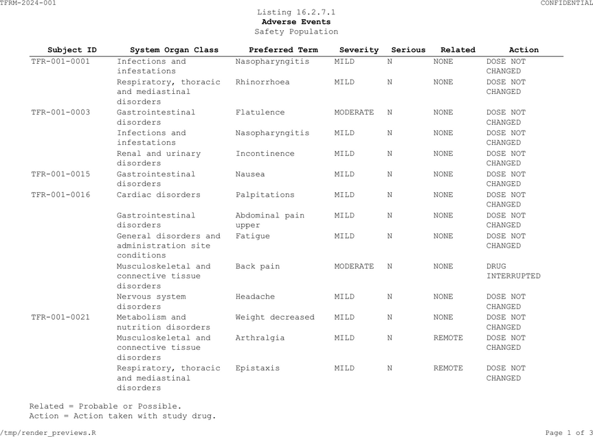
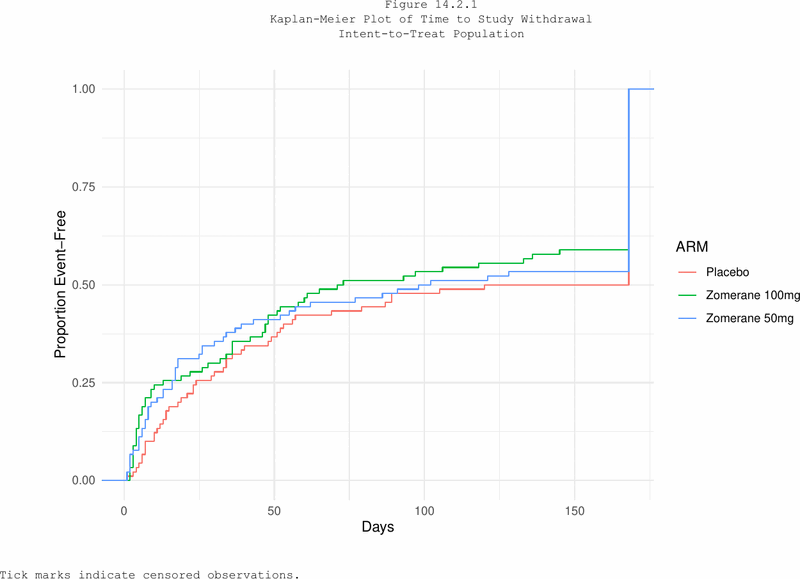

Listings
fr_listing() creates a spec optimised for record-level
patient listings. It uses the same pipeline verbs as
fr_table() but with different defaults:
| Feature | fr_table() |
fr_listing() |
|---|---|---|
| Font size | 9pt | 8pt |
| Alignment | Auto-detect | Left |
| Text wrapping | Off | On |
| Column splitting | Off | On |
| H-lines | None | "header" |
AE Listing (16.2.7.1)
ae_list <- adae[1:40, c("USUBJID", "AEBODSYS", "AEDECOD",
"AESEV", "AESER", "AEREL", "AEACN")]
ae_listing_spec <- ae_list |>
fr_listing() |>
fr_titles(
"Listing 16.2.7.1",
list("Adverse Events", bold = TRUE),
"Safety Population"
) |>
fr_cols(
USUBJID = fr_col("Subject ID", width = 1.3),
AEBODSYS = fr_col("System Organ Class", width = 1.8),
AEDECOD = fr_col("Preferred Term", width = 1.5),
AESEV = fr_col("Severity", width = 0.8),
AESER = fr_col("Serious", width = 0.7),
AEREL = fr_col("Related", width = 0.8),
AEACN = fr_col("Action", width = 1.2)
) |>
fr_rows(sort_by = c("USUBJID", "AEBODSYS", "AEDECOD"),
repeat_cols = "USUBJID") |>
fr_footnotes(
"Related = Probable or Possible.",
"Action = Action taken with study drug."
)
fr_validate(ae_listing_spec)
ae_listing_spec |> fr_render("output/Listing_16_2_7_1.rtf")
AE listing (PDF output, page 1)
Key listing features
sort_by orders rows by the named
columns:
spec <- adae[1:10, c("USUBJID", "AEDECOD", "AESEV")] |>
fr_listing() |>
fr_rows(sort_by = c("USUBJID", "AEDECOD"))repeat_cols suppresses repeated values
(like SAS NOREPEAT):
spec <- adae[1:10, c("ARM", "USUBJID", "AEDECOD")] |>
fr_listing() |>
fr_rows(sort_by = c("ARM", "USUBJID"),
repeat_cols = c("ARM", "USUBJID"))wrap = TRUE enables automatic text
wrapping (on by default in listings):
spec <- adae[1:5, c("USUBJID", "AEBODSYS")] |>
fr_listing() |>
fr_rows(wrap = TRUE)Figures
fr_figure() wraps a ggplot2 or base R plot into the same
pipeline, giving it titles, footnotes, page headers, and footers:
# fr_figure() wraps a ggplot2 or base R plot
# pagehead/pagefoot are inherited from fr_theme() --- no need to repeat
my_plot |>
fr_figure(width = 8, height = 5) |>
fr_titles(
"Figure 14.2.1",
"Kaplan-Meier Plot of Time to Study Withdrawal"
)With ggplot2
if (requireNamespace("ggplot2", quietly = TRUE)) {
library(ggplot2)
km_plot <- ggplot(adtte, aes(x = AVAL, colour = ARM)) +
stat_ecdf(geom = "step") +
labs(x = "Days", y = "Proportion Event-Free") +
theme_minimal()
fig_spec <- km_plot |>
fr_figure(width = 8, height = 5) |>
fr_titles(
"Figure 14.2.1",
"Kaplan-Meier Plot of Time to Study Withdrawal",
"Intent-to-Treat Population"
) |>
fr_footnotes("Tick marks indicate censored observations.")
}
fig_spec |> fr_render("output/Figure_14_2_1.pdf")
KM figure with titles and footnotes (PDF output)
Multi-page figures
Pass a list of plots to create a multi-page figure. Add a
meta data frame to inject per-page tokens into titles and
footnotes:
# Three KM plots --- one per subgroup
km_plots <- list(p_adults, p_pediatrics, p_geriatrics)
page_meta <- data.frame(
subgroup = c("Adults", "Pediatrics", "Geriatrics"),
n = c(80, 55, 30)
)
km_plots |>
fr_figure(meta = page_meta) |>
fr_titles(
"Figure 14.1.1 Kaplan-Meier Curve",
"Subgroup: {subgroup} (N = {n})"
) |>
fr_footnotes("Source: ADTTE") |>
fr_render("km_by_subgroup.rtf")Each meta column name becomes a {token}
resolved dynamically per page. The second title line renders as
“Subgroup: Adults (N = 80)” on page 1, “Subgroup: Pediatrics (N = 55)”
on page 2, and so on.
Figure parameters
| Parameter | Default | Description |
|---|---|---|
plot |
(required) | ggplot2 object, recorded base R plot, or a list of either |
width |
NULL |
Plot width in inches (auto-sized from page if
NULL) |
height |
NULL |
Plot height in inches (70% of printable height if
NULL) |
meta |
NULL |
Data frame with one row per plot; columns become
{token} names in titles/footnotes |